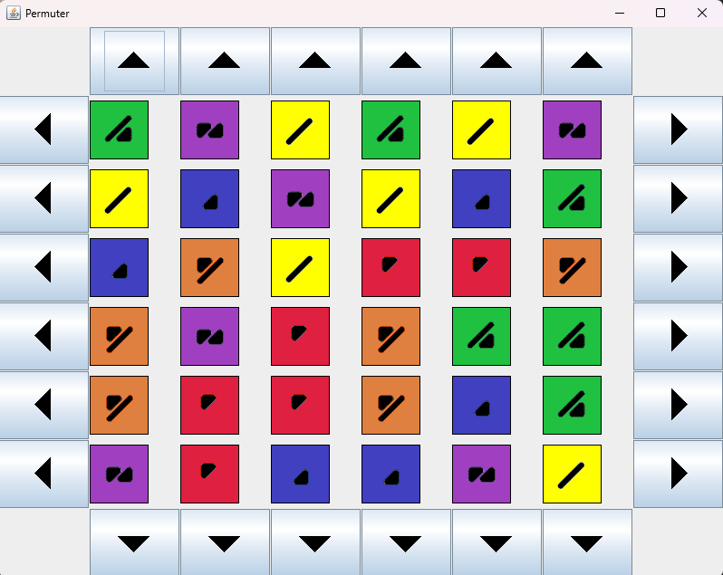

Description
Ce projet implémente le jeu de puzzle Taquin, qui est un jeu de glissement de tuiles. Le but est de réorganiser les tuiles pour former une image ou une séquence de nombres dans l'ordre correct. Dans mon jeux le joueur doit réorganiser toute les tuoils de couleur en lignes en utiliant les bouttons de déplacement. Pour creer l interface j'utilise javax.swing.
Fonctionnalités
- Deplacement de tuiles
Technologies utilisées
- JAVA